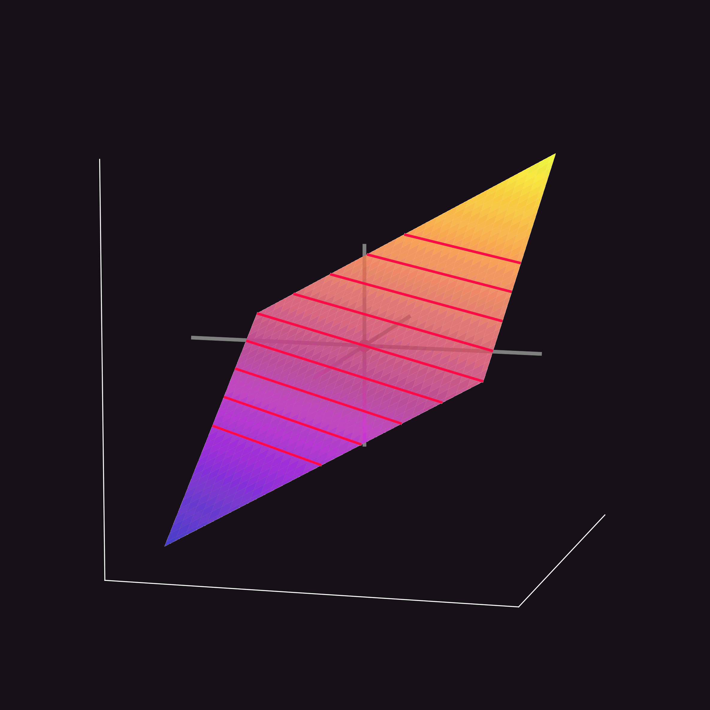
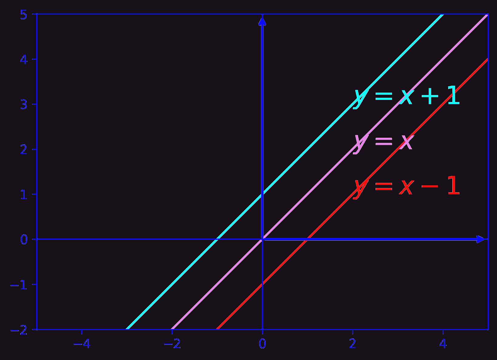
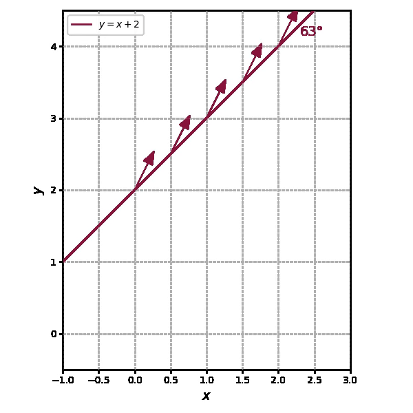
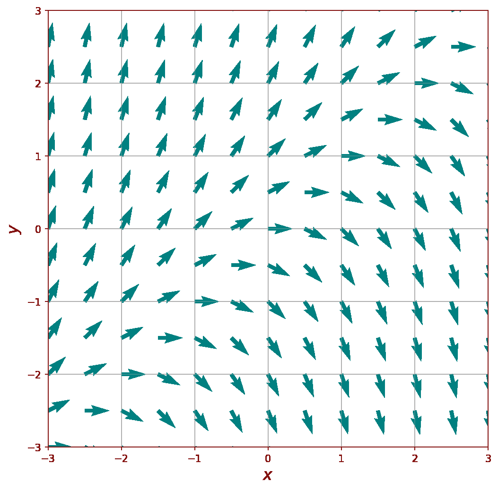
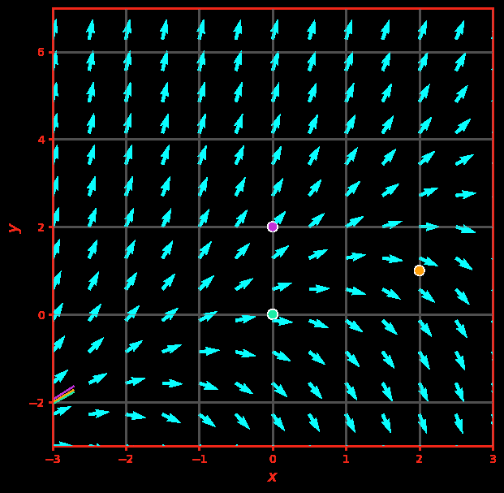
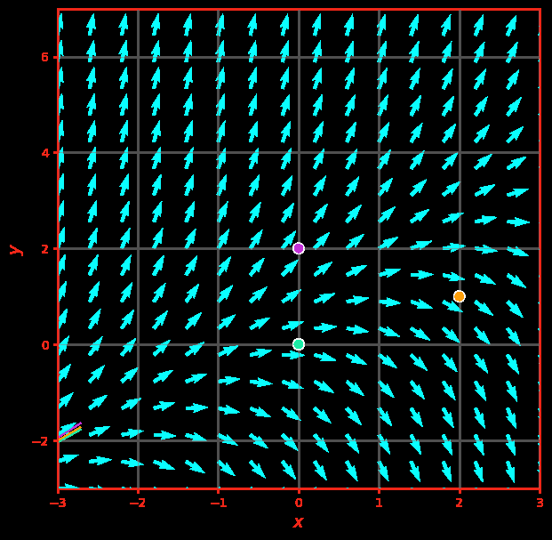

For
the slope function is the plane \( f(x,y) = y - x \).


The isoclines \( y - x = C \) are parallel lines \( y = x + C \). On each line every direction segment has the same slope \( C \).
Drawing the isoclines one after another builds the skeleton of the direction field.


Many isoclines fill the plane with direction segments — the direction field.
Solution curves run tangent to the field everywhere. Note the exceptional straight-line solution \( y = x + 1 \).


More solutions, from initial conditions on both sides of the line \( y = x + 1 \).